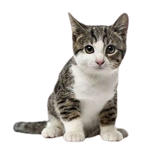
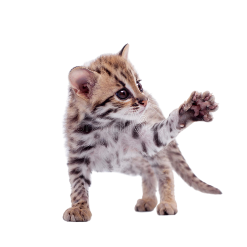
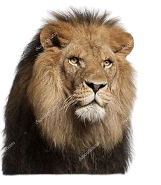
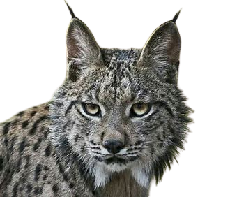

| Éspecies | Imagens | Caracteristicas |
|---|---|---|
| Gato domestico |

|
Um gato doméstico pela pura definição da palavra é suposto ser um gato que reside em um domicílio – no entanto, nem todos os gatos domésticos são gatos domésticos. Gatos domésticos podem ser de raças puras, mestiças, viver em uma casa ou fazenda com humanos, ou residir em um bairro como um gato vadio ou feroz. |
| Gato Leopardo |

|
O gato-leopardo é um hábil escalador de árvores. Também consegue nadar, mas raramente o faz. É um gato de hábitos noturnos, e passa os dias em tocas, que podem ser árvores ocas, cavidades sobre raízes ou cavernas. Ele pode passar algum tempo fora das tocas em áreas onde não há humanos. |
| Leão |

|
"Segundo maior felino do mundo, o leão perde em tamanho apenas para o tigre. Os leões apresentam de 1,37 a 2 m de tamanho (corpo e cabeça), e sua cauda pode atingir até 100 cm de comprimento. O peso varia entre 120 e 190 quilos, mas vale destacar que já foram descritos indivíduos com mais de 250 kg. O maior leão já encontrado pesava 272 kg. Os leões apresentam uma pelagem amarela dourada, a qual é importante para garantir a camuflagem em meio à vegetação da savana. Quando jovens, apresentam manchas claras em sua pelagem, as quais desaparecem à medida que se tornam mais velhos. Os machos se destacam pela presença de jubas, pelos longos localizados ao redor de sua cabeça. Algumas fêmeas podem apresentar jubas, mas não se sabe por que isso ocorre." |
| Lince-ibérico |

|
O lince-ibérico apresenta muitas das características típicas dos linces, como orelhas peludas, pernas longas, cauda curta e um colar de pelo que se assemelha a uma barba. Diferentemente dos seus parentes euroasiáticos, o lince-ibérico tem uma cor castanho-amarelada com manchas. |